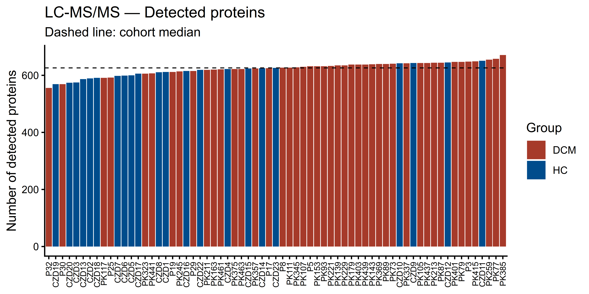
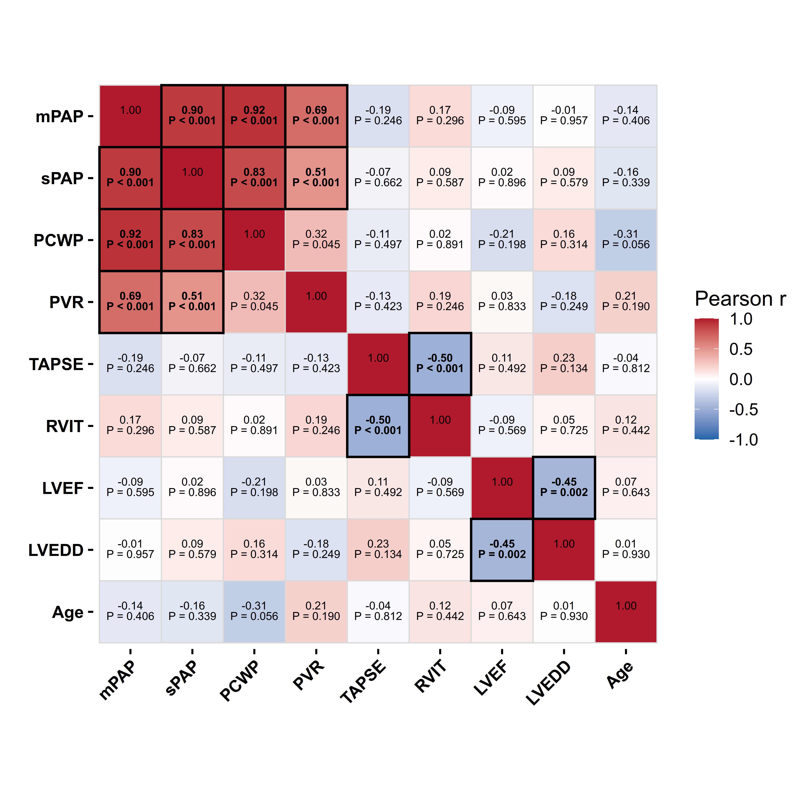
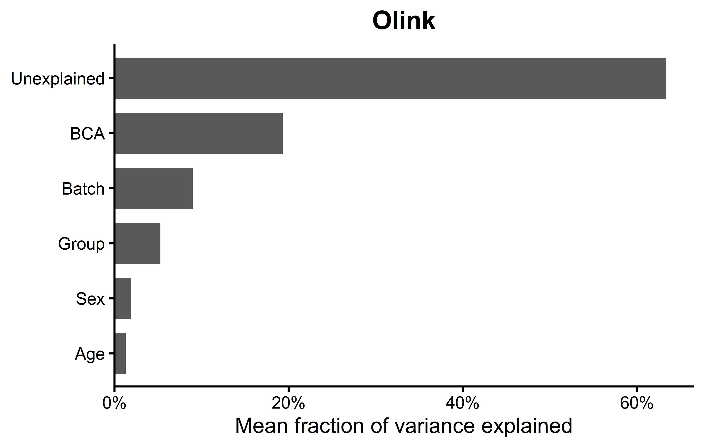
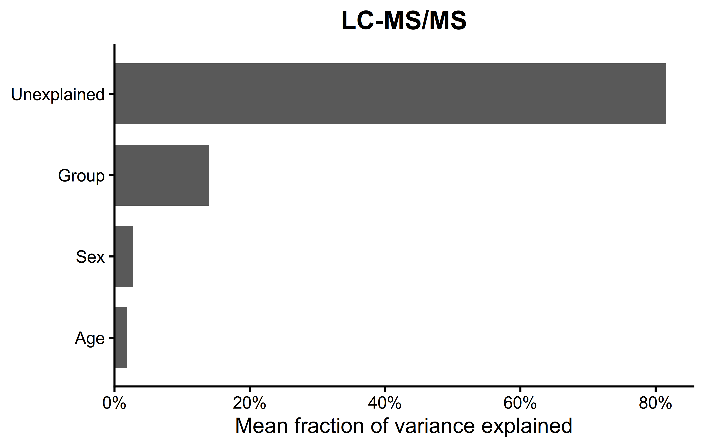
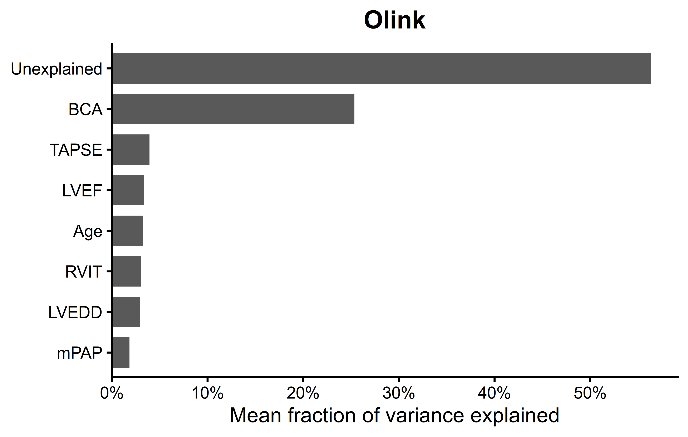
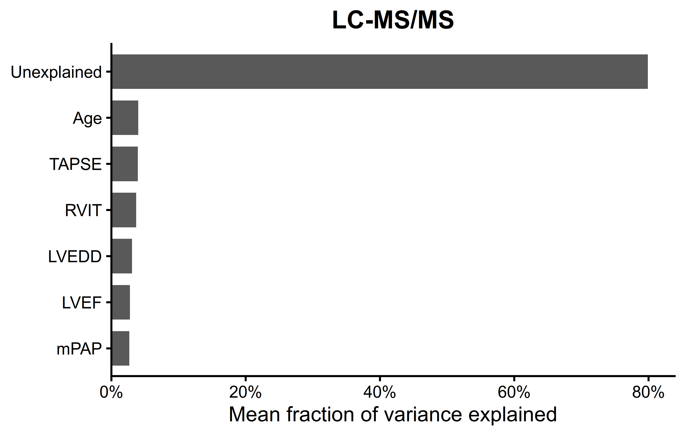
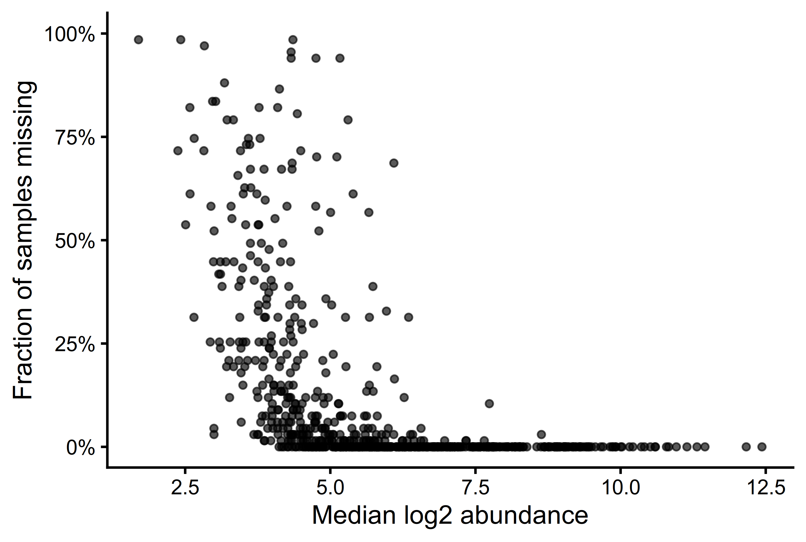
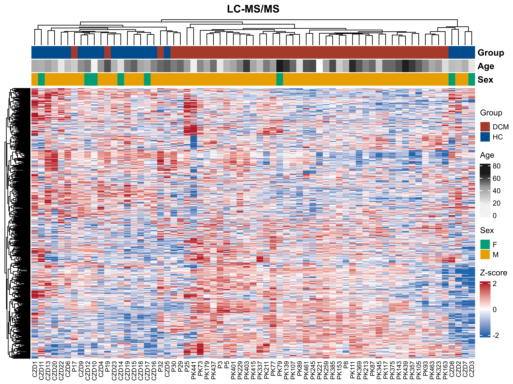
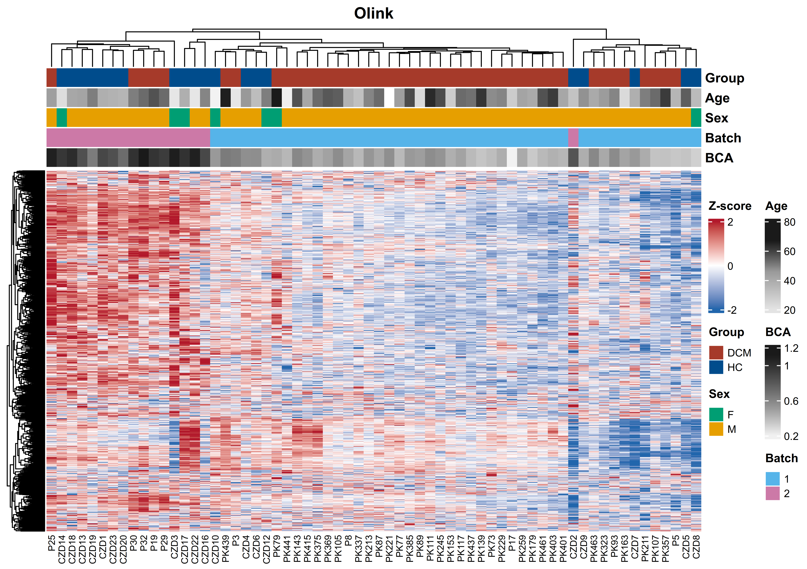

Last updated: 2026-11-18
Checks: 7 0
Knit directory: Protein_quality_control/
This reproducible R Markdown analysis was created with workflowr (version 1.7.2). The Checks tab describes the reproducibility checks that were applied when the results were created. The Past versions tab lists the development history.
Great! Since the R Markdown file has been committed to the Git repository, you know the exact version of the code that produced these results.
Great job! The global environment was empty. Objects defined in the global environment can affect the analysis in your R Markdown file in unknown ways. For reproduciblity it’s best to always run the code in an empty environment.
The command set.seed(20240606) was run prior to running
the code in the R Markdown file. Setting a seed ensures that any results
that rely on randomness, e.g. subsampling or permutations, are
reproducible.
Great job! Recording the operating system, R version, and package versions is critical for reproducibility.
Nice! There were no cached chunks for this analysis, so you can be confident that you successfully produced the results during this run.
Great job! Using relative paths to the files within your workflowr project makes it easier to run your code on other machines.
Great! You are using Git for version control. Tracking code development and connecting the code version to the results is critical for reproducibility.
The results in this page were generated with repository version 36af99f. See the Past versions tab to see a history of the changes made to the R Markdown and HTML files.
Note that you need to be careful to ensure that all relevant files for
the analysis have been committed to Git prior to generating the results
(you can use wflow_publish or
wflow_git_commit). workflowr only checks the R Markdown
file, but you know if there are other scripts or data files that it
depends on. Below is the status of the Git repository when the results
were generated:
Untracked files:
Untracked: data
Untracked: output
Unstaged changes:
Deleted: .gitattributes
Deleted: README.md
Modified: analysis/Ambient_RNA_correction.Rmd
Modified: analysis/Cardiomyocytes_cell_states.Rmd
Modified: analysis/Cell_communication.Rmd
Modified: analysis/Cell_state_annotation.Rmd
Modified: analysis/Clinical_transcriptomic_associations.Rmd
Modified: analysis/DCM_control_transcriptomics.Rmd
Modified: analysis/Endothelial_cells_cell_states.Rmd
Modified: analysis/Fibroblasts_cell_states.Rmd
Modified: analysis/Fibrosis_associations.Rmd
Modified: analysis/Integrative_analysis.Rmd
Modified: analysis/Lymphocytes_cell_states.Rmd
Modified: analysis/Macrophages_cell_states.Rmd
Modified: analysis/Mural_cells_cell_states.Rmd
Modified: analysis/Protein_differential_abundance.Rmd
Modified: analysis/Pulmonary_pressure_associations.Rmd
Modified: analysis/QC_integration.Rmd
Modified: analysis/Supplementary_datasets.Rmd
Modified: analysis/Transcriptional_signatures.Rmd
Modified: analysis/Transcriptomic_variation.Rmd
Deleted: data/Donor_ages.csv
Deleted: data/README.md
Deleted: data/processed/CM/baseline_markers.csv
Deleted: data/processed/CM/enrichment_checkpoints/A_0cbbca75d4f1db681c1775b95efd9126f7e3e7e667b35c109d1caef628e5fd6b.rds
Deleted: data/processed/CM/enrichment_checkpoints/A_84a9db10b602e17aa95fc96f2b404816277b007c1fc1d76ab34afdd05c7ec51d.rds
Deleted: data/processed/CM/enrichment_checkpoints/A_8536fd635fd79f7cd2af4577b1a43188e5fab098aca28c222d73d4548fd9da0e.rds
Deleted: data/processed/CM/enrichment_checkpoints/A_9535c4091945277f0e24c32743c56e93a3987d07504ab8337547c410443118c4.rds
Deleted: data/processed/CM/heatmap_cells.csv
Deleted: data/processed/CM/markers.csv
Deleted: data/processed/DCM_control_GSEA/A_Adipocytes_GSEA_GO.rds
Deleted: data/processed/DCM_control_GSEA/A_Cardiomyocytes_GSEA_GO.rds
Deleted: data/processed/DCM_control_GSEA/A_Endocardial_cells_GSEA_GO.rds
Deleted: data/processed/DCM_control_GSEA/A_Endothelial_cells_GSEA_GO.rds
Deleted: data/processed/DCM_control_GSEA/A_Fibroblasts_GSEA_GO.rds
Deleted: data/processed/DCM_control_GSEA/A_Lymphatic_cells_GSEA_GO.rds
Deleted: data/processed/DCM_control_GSEA/A_Lymphocytes_GSEA_GO.rds
Deleted: data/processed/DCM_control_GSEA/A_Macrophages_GSEA_GO.rds
Deleted: data/processed/DCM_control_GSEA/A_Mast_cells_GSEA_GO.rds
Deleted: data/processed/DCM_control_GSEA/A_Neuronal_cells_GSEA_GO.rds
Deleted: data/processed/DCM_control_GSEA/A_Pericytes_GSEA_GO.rds
Deleted: data/processed/DCM_control_GSEA/A_Smooth_muscle_cells_GSEA_GO.rds
Deleted: data/processed/EC/baseline_markers.csv
Deleted: data/processed/EC/enrichment_checkpoints/A_77383a09e5e02ad65d84899effc8ee76443ba1b500c05ffba41021ad14402aea.rds
Deleted: data/processed/EC/enrichment_checkpoints/A_a320f99906f3122416b322a4a83ad14b43ffaffaa8f63b0e6acfc44984ddb635.rds
Deleted: data/processed/EC/enrichment_checkpoints/A_b80a1680a4c529f01f33530e72d66500d3f92c17ccb72c1d54150a84676fbe02.rds
Deleted: data/processed/EC/enrichment_checkpoints/A_b8af54e84d44cedee2f0683e3e4cd9bb527e6a35b3442ee1335e0e30f6510be5.rds
Deleted: data/processed/EC/heatmap_cells.csv
Deleted: data/processed/EC/markers.csv
Deleted: data/processed/FB/baseline_markers.csv
Deleted: data/processed/FB/enrichment_checkpoints/A_122aeceaf7f20ef012c3dc5978e5e7e5ec4dd7215be2501e026da28132747295.rds
Deleted: data/processed/FB/enrichment_checkpoints/A_8f5dc9f3d37bf8765cc93df19efb0fadbebd329dd2fc0947174ec87b3872e4a9.rds
Deleted: data/processed/FB/enrichment_checkpoints/A_e8b9f581bd0358a303ce6bbed607976ba9544318f99f078b143169b90636675d.rds
Deleted: data/processed/FB/enrichment_checkpoints/A_fe37635532739e04ee9de367d9708f43e5461ea5a18c93555de67ee1994e418b.rds
Deleted: data/processed/FB/heatmap_cells.csv
Deleted: data/processed/FB/markers.csv
Deleted: data/processed/Fibrosis_GSEA.rds
Deleted: data/processed/LC/baseline_markers.csv
Deleted: data/processed/LC/heatmap_cells.csv
Deleted: data/processed/LC/markers.csv
Deleted: data/processed/MC/baseline_markers.csv
Deleted: data/processed/MC/heatmap_cells.csv
Deleted: data/processed/MC/markers.csv
Deleted: data/processed/MP/baseline_markers.csv
Deleted: data/processed/MP/enrichment_checkpoints/A_0a134f9bbe478b2d0c3a139510d6be66847fd996c6f5d0b2492c0c21b7e9cd49.rds
Deleted: data/processed/MP/enrichment_checkpoints/A_3dffd85c7a83e4f0e3f9168fee1a29089ea816355c0657127177abd83daa26b2.rds
Deleted: data/processed/MP/enrichment_checkpoints/A_d3295e5cfdc26bf914c02d64daa267490ddb69acf146e743ee1e6ea9eae0a46b.rds
Deleted: data/processed/MP/enrichment_checkpoints/A_fe79b6b49d64558e79dd80cb3692ca93943ebd4a102025b43ee5900b0501b044.rds
Deleted: data/processed/MP/heatmap_cells.csv
Deleted: data/processed/MP/markers.csv
Deleted: data/processed/QC/UMAP_label_positions.csv
Deleted: data/processed/QC/annotation_decisions.csv
Deleted: data/processed/QC/cell_type_markers.csv
Deleted: data/processed/QC/final_markers.csv
Deleted: data/processed/QC/initial_cluster_decisions.csv
Deleted: data/processed/QC/initial_markers.csv
Deleted: data/processed/SoupX/canonical_marker_definitions.csv
Deleted: data/processed/SoupX/samples.csv
Deleted: data/processed/SoupX/source_profile_manifest.csv
Deleted: data/processed/mPAP/A_fresh_GSEA_derived_programme_memberships.csv
Deleted: data/processed/mPAP/CM_GSEA_GO_mPAP.rds
Deleted: data/processed/mPAP/CM_GSEA_KEGG_mPAP.rds
Deleted: data/processed/mPAP/CM_ORA_GO_mPAP_down.rds
Deleted: data/processed/mPAP/CM_ORA_GO_mPAP_up.rds
Deleted: data/processed/mPAP/CM_ORA_KEGG_mPAP_down.rds
Deleted: data/processed/mPAP/CM_ORA_KEGG_mPAP_up.rds
Deleted: data/processed/mPAP/Endocardial_cells_GSEA_GO_mPAP.rds
Deleted: data/processed/mPAP/Endothelial_cells_GSEA_GO_mPAP.rds
Deleted: data/processed/mPAP/Fibroblasts_GSEA_GO_mPAP.rds
Deleted: data/processed/mPAP/GSEA_all_nonCM_list.rds
Deleted: data/processed/mPAP/Macrophages_GSEA_GO_mPAP.rds
Deleted: data/processed/mPAP/Neuronal_cells_GSEA_GO_mPAP.rds
Deleted: data/processed/mPAP/Pericytes_GSEA_GO_mPAP.rds
Deleted: data/processed/mPAP/Smooth_muscle_cells_GSEA_GO_mPAP.rds
Deleted: data/processed/mPAP/T_lymphocytes_GSEA_GO_mPAP.rds
Deleted: data/processed/mPAP/ranked_genes_nonCM_list.rds
Deleted: data/processed/resources/A_collectri_human_splitFALSE.rds
Deleted: data/processed/resources/A_lr_network_human_allInfo_30112033.rds
Deleted: data/processed/resources/A_progeny_human_top100000.rds
Deleted: data/processed/resources/A_submitted_918_programme_memberships.csv
Deleted: data/processed/shared_expression/database_snapshot.rds
Deleted: data/processed/shared_expression/symbol_Entrez_mapping.csv
Deleted: output/README.md
Note that any generated files, e.g. HTML, png, CSS, etc., are not included in this status report because it is ok for generated content to have uncommitted changes.
These are the previous versions of the repository in which changes were
made to the R Markdown
(analysis/Protein_quality_control.Rmd) and HTML
(docs/Protein_quality_control.html) files. If you’ve
configured a remote Git repository (see ?wflow_git_remote),
click on the hyperlinks in the table below to view the files as they
were in that past version.
| File | Version | Author | Date | Message |
|---|---|---|---|---|
| Rmd | 36af99f | GinoBonazza | 2026-11-18 | Harmonise rounded donor ages and remove workflowr figure-path override |
| html | 36af99f | GinoBonazza | 2026-11-18 | Harmonise rounded donor ages and remove workflowr figure-path override |
| Rmd | d7145b3 | GinoBonazza | 2026-11-18 | Publish HC-inclusive reports and reproducible R figures |
| html | d7145b3 | GinoBonazza | 2026-11-18 | Publish HC-inclusive reports and reproducible R figures |
| Rmd | c00d3ff | GinoBonazza | 2026-11-18 | Link exported protein figures directly in workflowr reports |
| html | c00d3ff | GinoBonazza | 2026-11-18 | Link exported protein figures directly in workflowr reports |
| Rmd | d4b8eb1 | GinoBonazza | 2026-11-18 | Document assay-specific age covariates in donor metadata |
| html | d4b8eb1 | GinoBonazza | 2026-11-18 | Document assay-specific age covariates in donor metadata |
| Rmd | 0ab82a3 | GinoBonazza | 2026-11-18 | Include RNA processing and sequencing batches in EV1 |
| html | 0ab82a3 | GinoBonazza | 2026-11-18 | Include RNA processing and sequencing batches in EV1 |
| Rmd | cda4263 | GinoBonazza | 2026-11-18 | Align signature membership exports with the tested cell types |
| html | cda4263 | GinoBonazza | 2026-11-18 | Align signature membership exports with the tested cell types |
| Rmd | 78001e3 | GinoBonazza | 2026-11-18 | Refine compact programme panel labels |
| html | 78001e3 | GinoBonazza | 2026-11-18 | Refine compact programme panel labels |
| Rmd | 9a47f63 | GinoBonazza | 2026-11-18 | Add HC-inclusive analysis scripts and frozen reproducibility inputs |
| html | 9a47f63 | GinoBonazza | 2026-11-18 | Add HC-inclusive analysis scripts and frozen reproducibility inputs |
| Rmd | d136073 | GinoBonazza | 2026-10-19 | MXRA5 coexpression analysis |
| html | d136073 | GinoBonazza | 2026-10-19 | MXRA5 coexpression analysis |
knitr::opts_chunk$set(warning = FALSE, message = FALSE, error = FALSE, cache = FALSE, echo = TRUE, dpi = 600, fig.retina = 1,
fig.align = "center", dev = "png", dev.args = list(type = "cairo", family = "Arial"))
library(here)here() starts at /scratch/gbonaz/A_age_correction_20261118/builds/Protein_quality_controlcurrent_file <- "Protein_quality_control"
output_dir_data <- here::here("output", current_file)
output_dir_figs <- here::here("docs", "figure", paste0(current_file, ".Rmd"))
dir.create(output_dir_data, recursive = TRUE, showWarnings = FALSE)
dir.create(output_dir_figs, recursive = TRUE, showWarnings = FALSE)
dir.create(here::here("output", "Datasets"), recursive = TRUE, showWarnings = FALSE)
set.seed(20240606)
# One rounded age per donor is shared by RNA and proteomics analyses.
donor_ages <- read.csv(here::here("data", "Donor_ages.csv"), stringsAsFactors = FALSE)
stopifnot(!anyDuplicated(donor_ages$Sample), donor_ages$Age_years[donor_ages$Sample == "CZD7"] == 38)
set_donor_age <- function(x) {
is_seurat <- inherits(x, "Seurat")
md <- if (is_seurat) x[[]] else x
if (is.data.frame(md) && all(c("Sample", "Age_years") %in% names(md))) {
j <- match(trimws(as.character(md$Sample)), donor_ages$Sample)
present <- !is.na(md$Sample) & nzchar(trimws(as.character(md$Sample)))
stopifnot(!anyNA(j[present]))
x$Age_years <- donor_ages$Age_years[j]
}
x
}library(dplyr)
library(tidyr)
library(tibble)
library(stringr)
library(readxl)
library(ggplot2)
library(ggrepel)
library(patchwork)
library(limma)
library(matrixStats)
library(ComplexHeatmap)
library(circlize)
library(scales)
library(Hmisc)
library(ggtext)
library(variancePartition)
BiocParallel::register(BiocParallel::SerialParam())
O <- output_dir_data
output_dir <- file.path(O, "QC")
dir.create(output_dir, showWarnings = FALSE)
figure_dir <- output_dir_figsnormalise_sample_id <- function(x) {
trimws(as.character(x))
}
make_group_palette <- function(values) {
group_colours <- c(DCM = "#A63A2A", ICM = "#004C8C")
levels_present <- sort(unique(as.character(values[!is.na(values)])))
unexpected_levels <- setdiff(levels_present, names(group_colours))
if (length(unexpected_levels) > 0L) {
stop("Unexpected Group label(s): ", paste(unexpected_levels, collapse = ", "))
}
group_colours[levels_present]
}
safe_continuous_colour <- function(values, colours = c("grey90", "grey60", "grey20")) {
finite_values <- values[is.finite(values)]
if (length(finite_values) == 0L) {
return(NULL)
}
breaks <- c(min(finite_values), stats::median(finite_values), max(finite_values))
if (length(unique(breaks)) < 3L) {
spread <- max(abs(breaks[1L]) * 0.01, 0.01)
breaks <- c(breaks[1L] - spread, breaks[1L], breaks[1L] + spread)
}
circlize::colorRamp2(breaks, colours)
}
impute_rows_median <- function(mat) {
output <- as.matrix(mat)
for (i in seq_len(nrow(output))) {
missing <- !is.finite(output[i, ])
if (!any(missing)) {
next
}
observed <- output[i, !missing]
replacement <- if (length(observed) > 0L) {
stats::median(observed, na.rm = TRUE)
}
else {
0
}
output[i, missing] <- replacement
}
output[!is.finite(output)] <- 0
output
}
impute_rows_low_value <- function(mat) {
output <- as.matrix(mat)
global_floor <- suppressWarnings(stats::quantile(output, probs = 0.01, na.rm = TRUE))
if (!is.finite(global_floor)) {
global_floor <- 0
}
for (i in seq_len(nrow(output))) {
missing <- !is.finite(output[i, ])
if (!any(missing)) {
next
}
observed <- output[i, !missing]
replacement <- if (length(observed) > 0L) {
minimum <- min(observed, na.rm = TRUE)
spread <- stats::sd(observed, na.rm = TRUE)
if (!is.finite(spread) || spread == 0) {
spread <- 0.5
}
minimum - 0.5 * spread
}
else {
global_floor
}
output[i, missing] <- replacement
}
output[!is.finite(output)] <- global_floor
output
}
filter_usable_features <- function(mat, minimum_observed = 2L) {
mat <- as.matrix(mat)
observed <- matrixStats::rowSums2(is.finite(mat))
variance <- matrixStats::rowVars(mat, na.rm = TRUE)
keep <- observed >= minimum_observed & is.finite(variance) & variance > 0
mat[keep, , drop = FALSE]
}
prepare_pca <- function(mat, metadata, assay_name, minimum_observed_fraction = pca_min_observed_fraction) {
mat <- as.matrix(mat)
observed_fraction <- matrixStats::rowMeans2(is.finite(mat))
variance <- matrixStats::rowVars(mat, na.rm = TRUE)
keep <- observed_fraction >= minimum_observed_fraction & is.finite(variance) & variance > 0
pca_matrix <- mat[keep, , drop = FALSE]
if (nrow(pca_matrix) < 2L) {
stop(assay_name, ": fewer than two proteins are available for PCA.")
}
pca_matrix <- impute_rows_median(pca_matrix)
pca <- stats::prcomp(t(pca_matrix), center = TRUE, scale. = TRUE)
variance_explained <- pca$sdev^2/sum(pca$sdev^2) * 100
plot_data <- data.frame(Sample = rownames(pca$x), PC1 = pca$x[, 1L], PC2 = pca$x[, 2L], stringsAsFactors = FALSE) %>%
dplyr::left_join(metadata, by = "Sample")
list(pca = pca, variance_explained = variance_explained, plot_data = plot_data, number_features = nrow(pca_matrix),
assay_name = assay_name)
}
plot_pca_group <- function(pca_object, title_suffix) {
plot_data <- pca_object$plot_data
group_colours <- make_group_palette(plot_data$Group)
output <- ggplot(plot_data, aes(x = PC1, y = PC2, colour = Group)) + geom_hline(yintercept = 0, colour = "grey85",
linewidth = 0.3) + geom_vline(xintercept = 0, colour = "grey85", linewidth = 0.3) + geom_point(size = 3) +
scale_colour_manual(values = group_colours, na.value = "grey60") + labs(title = paste(pca_object$assay_name,
title_suffix, sep = " — "), subtitle = paste(pca_object$number_features, "proteins used"), x = paste0("PC1 (",
round(pca_object$variance_explained[1L], 1), "%)"), y = paste0("PC2 (", round(pca_object$variance_explained[2L],
1), "%)"), colour = "Group") + theme_classic()
if (isTRUE(label_pca_samples)) {
output <- output + ggrepel::geom_text_repel(aes(label = Sample), size = 2.7, max.overlaps = Inf, box.padding = 0.25,
point.padding = 0.15, segment.size = 0.25, show.legend = FALSE)
}
output
}
make_sample_annotation <- function(metadata, samples, include_olink_technical = FALSE) {
ordered_metadata <- metadata %>% dplyr::slice(match(samples, Sample))
annotation_data <- data.frame(Group = factor(ordered_metadata$Group), row.names = samples, check.names = FALSE)
annotation_colours <- list(Group = make_group_palette(annotation_data$Group))
if (isTRUE(include_olink_technical) && "Batch" %in% colnames(ordered_metadata)) {
annotation_data$Batch <- factor(ordered_metadata$Batch)
batch_levels <- levels(droplevels(annotation_data$Batch))
if (length(batch_levels) > 0L) {
batch_colours <- setNames((scales::hue_pal(h = c(30, 300), c = 80, l = 55))(length(batch_levels)),
batch_levels)
annotation_colours$Batch <- batch_colours
}
}
if (isTRUE(include_olink_technical) && "BCA_mg_ml" %in% colnames(ordered_metadata)) {
bca <- as.numeric(ordered_metadata$BCA_mg_ml)
if (any(is.finite(bca))) {
annotation_data$BCA_mg_ml <- bca
annotation_colours$BCA_mg_ml <- safe_continuous_colour(bca)
}
}
ComplexHeatmap::HeatmapAnnotation(df = annotation_data, col = annotation_colours, na_col = "#E5E7EB")
}
draw_expression_heatmap <- function(mat, metadata, assay_name, title_suffix, imputation = c("median", "low"), include_olink_technical = FALSE) {
imputation <- match.arg(imputation)
mat <- filter_usable_features(mat)
if (imputation == "median") {
visualisation_matrix <- impute_rows_median(mat)
}
else {
visualisation_matrix <- impute_rows_low_value(mat)
}
z_matrix <- t(scale(t(visualisation_matrix)))
z_matrix[!is.finite(z_matrix)] <- 0
annotation <- make_sample_annotation(metadata = metadata, samples = colnames(z_matrix), include_olink_technical = include_olink_technical)
heatmap <- ComplexHeatmap::Heatmap(z_matrix, name = "z-score", top_annotation = annotation, show_row_names = FALSE,
show_column_names = TRUE, column_names_gp = grid::gpar(fontsize = heatmap_column_fontsize), cluster_rows = TRUE,
cluster_columns = TRUE, use_raster = nrow(z_matrix) > 2000, raster_quality = 2, col = circlize::colorRamp2(c(-2,
0, 2), c("#2166AC", "white", "#B2182B")), column_title = paste(assay_name, title_suffix, paste0("(",
nrow(z_matrix), " proteins; ", ncol(z_matrix), " samples)"), sep = " — "))
ComplexHeatmap::draw(heatmap, heatmap_legend_side = "right", annotation_legend_side = "right")
invisible(heatmap)
}
matrix_to_long <- function(mat, metadata, value_name) {
as.data.frame(mat) %>% tibble::rownames_to_column("Protein") %>% tidyr::pivot_longer(cols = -Protein, names_to = "Sample",
values_to = value_name) %>% dplyr::left_join(metadata %>% dplyr::select(Sample, Group), by = "Sample")
}
plot_sample_boxplots <- function(mat, metadata, assay_name, title_suffix, y_label) {
long_data <- matrix_to_long(mat, metadata, value_name = "Abundance") %>% dplyr::filter(is.finite(Abundance))
sample_order <- long_data %>% dplyr::group_by(Sample) %>% dplyr::summarise(median_abundance = stats::median(Abundance,
na.rm = TRUE), .groups = "drop") %>% dplyr::arrange(median_abundance) %>% dplyr::pull(Sample)
long_data$Sample <- factor(long_data$Sample, levels = sample_order)
group_colours <- make_group_palette(long_data$Group)
ggplot(long_data, aes(x = Sample, y = Abundance, fill = Group)) + geom_boxplot(outlier.shape = NA, width = 0.75,
linewidth = 0.25) + scale_fill_manual(values = group_colours, na.value = "grey70") + labs(title = paste(assay_name,
title_suffix, sep = " — "), x = NULL, y = y_label, fill = "Group") + theme_classic() + theme(axis.text.x = element_text(angle = 90,
hjust = 1, vjust = 0.5, size = distribution_sample_fontsize))
}
plot_sample_densities <- function(mat, metadata, assay_name, title_suffix, x_label) {
long_data <- matrix_to_long(mat, metadata, value_name = "Abundance") %>% dplyr::filter(is.finite(Abundance))
group_colours <- make_group_palette(long_data$Group)
ggplot(long_data, aes(x = Abundance, group = Sample, colour = Group)) + geom_density(linewidth = 0.45, alpha = 0.65) +
scale_colour_manual(values = group_colours, na.value = "grey65") + labs(title = paste(assay_name, title_suffix,
sep = " — "), x = x_label, y = "Density", colour = "Group") + theme_classic()
}
calculate_sample_metrics <- function(mat, metadata, assay_name) {
mat <- as.matrix(mat)
metrics <- tibble::tibble(Sample = colnames(mat), number_detected = matrixStats::colSums2(is.finite(mat)),
missing_fraction = matrixStats::colMeans2(!is.finite(mat)), median_abundance = matrixStats::colMedians(mat,
na.rm = TRUE), mean_abundance = matrixStats::colMeans2(mat, na.rm = TRUE)) %>% dplyr::left_join(metadata %>%
dplyr::select(Sample, Group), by = "Sample") %>% dplyr::mutate(assay = assay_name)
metrics
}
plot_detected_per_sample <- function(metrics, assay_name, title_suffix) {
plot_data <- metrics %>% dplyr::arrange(number_detected) %>% dplyr::mutate(Sample = factor(Sample, levels = Sample))
group_colours <- make_group_palette(plot_data$Group)
ggplot(plot_data, aes(x = Sample, y = number_detected, fill = Group)) + geom_col() + geom_hline(yintercept = stats::median(plot_data$number_detected,
na.rm = TRUE), linetype = 2, linewidth = 0.4) + scale_fill_manual(values = group_colours, na.value = "grey70") +
labs(title = paste(assay_name, title_suffix, sep = " — "), subtitle = "Dashed line: cohort median", x = NULL,
y = "Number of detected proteins", fill = "Group") + theme_classic() + theme(axis.text.x = element_text(angle = 90,
hjust = 1, vjust = 0.5, size = distribution_sample_fontsize))
}
plot_missing_fraction <- function(metrics, assay_name, title_suffix) {
plot_data <- metrics %>% dplyr::arrange(missing_fraction) %>% dplyr::mutate(Sample = factor(Sample, levels = Sample))
group_colours <- make_group_palette(plot_data$Group)
ggplot(plot_data, aes(x = Sample, y = missing_fraction, fill = Group)) + geom_col() + scale_y_continuous(labels = scales::percent) +
scale_fill_manual(values = group_colours, na.value = "grey70") + labs(title = paste(assay_name, title_suffix,
sep = " — "), x = NULL, y = "Missing fraction", fill = "Group") + theme_classic() + theme(axis.text.x = element_text(angle = 90,
hjust = 1, vjust = 0.5, size = distribution_sample_fontsize))
}
plot_median_abundance <- function(metrics, assay_name, title_suffix, y_label) {
plot_data <- metrics %>% dplyr::arrange(median_abundance) %>% dplyr::mutate(Sample = factor(Sample, levels = Sample))
group_colours <- make_group_palette(plot_data$Group)
ggplot(plot_data, aes(x = Sample, y = median_abundance, fill = Group)) + geom_col() + scale_fill_manual(values = group_colours,
na.value = "grey70") + labs(title = paste(assay_name, title_suffix, sep = " — "), x = NULL, y = y_label,
fill = "Group") + theme_classic() + theme(axis.text.x = element_text(angle = 90, hjust = 1, vjust = 0.5,
size = distribution_sample_fontsize))
}
plot_feature_missingness <- function(mat, assay_name, title_suffix) {
missing_fraction <- matrixStats::rowMeans2(!is.finite(mat))
plot_data <- tibble::tibble(missing_fraction = missing_fraction)
ggplot(plot_data, aes(x = missing_fraction)) + geom_histogram(bins = 40, colour = "white", linewidth = 0.2) +
scale_x_continuous(labels = scales::percent) + labs(title = paste(assay_name, title_suffix, sep = " — "),
x = "Missing fraction per protein", y = "Number of proteins") + theme_classic()
}
draw_sample_correlation_heatmap <- function(mat, metadata, assay_name, title_suffix, include_olink_technical = FALSE) {
correlation <- stats::cor(mat, use = "pairwise.complete.obs", method = "pearson")
annotation <- make_sample_annotation(metadata = metadata, samples = colnames(correlation), include_olink_technical = include_olink_technical)
heatmap <- ComplexHeatmap::Heatmap(correlation, name = "Pearson r", top_annotation = annotation, show_row_names = TRUE,
show_column_names = TRUE, row_names_gp = grid::gpar(fontsize = heatmap_column_fontsize), column_names_gp = grid::gpar(fontsize = heatmap_column_fontsize),
col = circlize::colorRamp2(c(0, 0.9, 1), c("#2166AC", "white", "#B2182B")), column_title = paste(assay_name,
title_suffix, sep = " — "))
ComplexHeatmap::draw(heatmap, heatmap_legend_side = "right", annotation_legend_side = "right")
invisible(heatmap)
}
prepare_qc_set <- function(excluded_samples, label) {
clinical_use <- clinical_non_control %>% dplyr::filter(!Sample %in% excluded_samples)
olink_samples <- clinical_use$Sample[clinical_use$Sample %in% colnames(olink_expression_all)]
ms_samples <- clinical_use$Sample[clinical_use$Sample %in% colnames(ms_expression_log2_all)]
olink_matrix <- olink_expression_all[, olink_samples, drop = FALSE]
ms_matrix <- ms_expression_log2_all[, ms_samples, drop = FALSE]
olink_metadata <- clinical_use %>% dplyr::left_join(olink_sample_metadata %>% dplyr::select(Sample, Batch,
BCA_mg_ml), by = "Sample") %>% dplyr::filter(Sample %in% olink_samples) %>% dplyr::slice(match(olink_samples,
Sample))
ms_metadata <- clinical_use %>% dplyr::filter(Sample %in% ms_samples) %>% dplyr::slice(match(ms_samples, Sample))
availability <- clinical_use %>% dplyr::transmute(Sample, Group, has_Olink = Sample %in% colnames(olink_expression_all),
has_LCMS = Sample %in% colnames(ms_expression_log2_all)) %>% dplyr::mutate(availability = dplyr::case_when(has_Olink &
has_LCMS ~ "Both Olink and LC-MS/MS", has_Olink & !has_LCMS ~ "Olink only", !has_Olink & has_LCMS ~ "LC-MS/MS only",
TRUE ~ "Neither")) %>% dplyr::arrange(availability, Group, Sample)
availability_summary <- availability %>% dplyr::count(availability, name = "number_samples") %>% tidyr::complete(availability = c("Both Olink and LC-MS/MS",
"Olink only", "LC-MS/MS only", "Neither"), fill = list(number_samples = 0L)) %>% dplyr::bind_rows(tibble::tibble(availability = "Total non-control samples",
number_samples = nrow(availability)))
list(label = label, excluded_samples = excluded_samples, clinical = clinical_use, olink = olink_matrix, ms = ms_matrix,
olink_metadata = olink_metadata, ms_metadata = ms_metadata, availability = availability, availability_summary = availability_summary)
}
write_qc_tables <- function(qc_object, suffix) {
write.csv(qc_object$availability, file.path(output_dir, paste0("sample_availability_", suffix, ".csv")), row.names = FALSE)
write.csv(qc_object$availability_summary, file.path(output_dir, paste0("sample_availability_summary_", suffix,
".csv")), row.names = FALSE)
olink_metrics <- calculate_sample_metrics(qc_object$olink, qc_object$olink_metadata, assay_name = "Olink")
ms_metrics <- calculate_sample_metrics(qc_object$ms, qc_object$ms_metadata, assay_name = "LC-MS/MS")
write.csv(olink_metrics, file.path(output_dir, paste0("Olink_sample_metrics_", suffix, ".csv")), row.names = FALSE)
write.csv(ms_metrics, file.path(output_dir, paste0("LCMS_sample_metrics_", suffix, ".csv")), row.names = FALSE)
invisible(list(olink_metrics = olink_metrics, ms_metrics = ms_metrics))
}clinical_file <- here::here("data/DCM_Clinical_data_83.xlsx")
olink_sample_file <- here::here("data/OLINK/Samples_RV_Olink.xlsx")
olink_quant_file <- here::here("data/OLINK/quant.xls")
ms_file <- here::here("data/Mass_spec/20260319_MS_DIA_report_2uniquepeptides.csv")
ms_zero_is_missing <- TRUE
clinical_all <- set_donor_age(readxl::read_excel(clinical_file)) %>% dplyr::select(-dplyr::matches("^Unnamed"), -dplyr::all_of(paste0("Sample_",
"age_days"))) %>% dplyr::mutate(Sample = normalise_sample_id(Sample), Group = trimws(as.character(Group)),
Age_years = as.numeric(Age_years)) %>% dplyr::filter(!is.na(Sample), nzchar(Sample)) %>% dplyr::distinct(Sample,
.keep_all = TRUE)
clinical_non_control <- clinical_all %>% dplyr::filter(Group %in% c("DCM", "HC")) %>% dplyr::mutate(Group = factor(Group,
levels = c("DCM", "HC")))
clinical_all %>% dplyr::count(Group, name = "number_samples")# A tibble: 3 × 2
Group number_samples
<chr> <int>
1 DCM 49
2 HC 22
3 ICM 11olink_sample_metadata <- set_donor_age(readxl::read_excel(olink_sample_file)) %>% dplyr::select(-dplyr::matches("^Unnamed")) %>%
dplyr::mutate(Sample = normalise_sample_id(Sample), BCA_mg_ml = as.numeric(BCA_mg_ml), Batch = factor(Batch)) %>%
dplyr::distinct(Sample, .keep_all = TRUE)
olink_raw <- read.delim(olink_quant_file, sep = "\t", check.names = FALSE)
if (!"SampleID" %in% colnames(olink_raw)) {
stop("The Olink file does not contain a SampleID column.")
}
olink_feature_ids <- sub("_.*", "", as.character(olink_raw$SampleID))
olink_expression_initial <- as.matrix(olink_raw[, setdiff(colnames(olink_raw), "SampleID"), drop = FALSE])
storage.mode(olink_expression_initial) <- "numeric"
colnames(olink_expression_initial) <- normalise_sample_id(colnames(olink_expression_initial))
olink_expression_all <- limma::avereps(olink_expression_initial, ID = olink_feature_ids)
olink_expression_all <- filter_usable_features(olink_expression_all)
dim(olink_expression_all)[1] 1034 86ms_raw <- read.csv(ms_file, check.names = FALSE)
ms_annotation_columns <- c("Protein.Group", "Protein.Names", "Genes", "First.Protein.Description", "N.Sequences",
"N.Proteotypic.Sequences")
missing_ms_annotation_columns <- setdiff(ms_annotation_columns, colnames(ms_raw))
if (length(missing_ms_annotation_columns) > 0L) {
stop("Missing expected LC-MS/MS annotation columns: ", paste(missing_ms_annotation_columns, collapse = ", "))
}
ms_sample_columns <- setdiff(colnames(ms_raw), ms_annotation_columns)
ms_qc_columns <- grep("^QC", ms_sample_columns, value = TRUE)
ms_biological_columns <- setdiff(ms_sample_columns, ms_qc_columns)
ms_gene <- sub(";.*$", "", as.character(ms_raw$Genes))
ms_gene <- trimws(ms_gene)
keep_ms_rows <- !is.na(ms_gene) & nzchar(ms_gene)
ms_expression_initial <- as.matrix(ms_raw[keep_ms_rows, ms_biological_columns, drop = FALSE])
storage.mode(ms_expression_initial) <- "numeric"
colnames(ms_expression_initial) <- normalise_sample_id(colnames(ms_expression_initial))
ms_gene <- ms_gene[keep_ms_rows]
ms_expression_collapsed <- limma::avereps(ms_expression_initial, ID = ms_gene)
ms_expression_log2_all <- log2(ms_expression_collapsed + 1)
if (isTRUE(ms_zero_is_missing)) {
ms_expression_log2_all[!is.finite(ms_expression_collapsed) | ms_expression_collapsed <= 0] <- NA_real_
} else {
ms_expression_log2_all[!is.finite(ms_expression_log2_all)] <- NA_real_
}
ms_expression_log2_all <- filter_usable_features(ms_expression_log2_all)
dim(ms_expression_log2_all)[1] 705 82excluded <- c("P11", "PK61", "PK63", "PK69")
filtered_proteomics <- prepare_qc_set(excluded, "DCM and controls")
saveRDS(filtered_proteomics, file.path(O, "A_HC_inclusive_proteomics_QC_objects.rds"))
write.csv(filtered_proteomics$availability, file.path(O, "A_assay_coverage.csv"), row.names = FALSE)library(dplyr)
library(tidyr)
library(tibble)
library(stringr)
library(ggplot2)
library(ggrepel)
library(patchwork)
library(limma)
library(matrixStats)
library(ComplexHeatmap)
library(circlize)
library(scales)
library(Hmisc)
library(ggtext)
library(variancePartition)
ComplexHeatmap::ht_opt(legend_title_gp = grid::gpar(fontsize = 9, fontfamily = "Arial"), legend_labels_gp = grid::gpar(fontsize = 8,
fontfamily = "Arial"))
BiocParallel::register(BiocParallel::SerialParam())
heatmap_column_fontsize <- 7
distribution_sample_fontsize <- 7
group_cols <- c(DCM = "#A63A2A", HC = "#004C8C")
qc_after <- filtered_proteomicsnormalise_sample_id <- function(x) {
trimws(as.character(x))
}
make_group_palette <- function(values) {
group_colours <- c(DCM = "#A63A2A", HC = "#004C8C")
levels_present <- sort(unique(as.character(values[!is.na(values)])))
unexpected_levels <- setdiff(levels_present, names(group_colours))
if (length(unexpected_levels) > 0L) {
stop("Unexpected Group label(s): ", paste(unexpected_levels, collapse = ", "))
}
group_colours[levels_present]
}
safe_continuous_colour <- function(values, colours = c("grey90", "grey60", "grey20")) {
finite_values <- values[is.finite(values)]
if (length(finite_values) == 0L) {
return(NULL)
}
breaks <- c(min(finite_values), stats::median(finite_values), max(finite_values))
if (length(unique(breaks)) < 3L) {
spread <- max(abs(breaks[1L]) * 0.01, 0.01)
breaks <- c(breaks[1L] - spread, breaks[1L], breaks[1L] + spread)
}
circlize::colorRamp2(breaks, colours)
}
impute_rows_median <- function(mat) {
output <- as.matrix(mat)
for (i in seq_len(nrow(output))) {
missing <- !is.finite(output[i, ])
if (!any(missing)) {
next
}
observed <- output[i, !missing]
replacement <- if (length(observed) > 0L) {
stats::median(observed, na.rm = TRUE)
}
else {
0
}
output[i, missing] <- replacement
}
output[!is.finite(output)] <- 0
output
}
impute_rows_low_value <- function(mat) {
output <- as.matrix(mat)
global_floor <- suppressWarnings(stats::quantile(output, probs = 0.01, na.rm = TRUE))
if (!is.finite(global_floor)) {
global_floor <- 0
}
for (i in seq_len(nrow(output))) {
missing <- !is.finite(output[i, ])
if (!any(missing)) {
next
}
observed <- output[i, !missing]
replacement <- if (length(observed) > 0L) {
minimum <- min(observed, na.rm = TRUE)
spread <- stats::sd(observed, na.rm = TRUE)
if (!is.finite(spread) || spread == 0) {
spread <- 0.5
}
minimum - 0.5 * spread
}
else {
global_floor
}
output[i, missing] <- replacement
}
output[!is.finite(output)] <- global_floor
output
}
filter_usable_features <- function(mat, minimum_observed = 2L) {
mat <- as.matrix(mat)
observed <- matrixStats::rowSums2(is.finite(mat))
variance <- matrixStats::rowVars(mat, na.rm = TRUE)
keep <- observed >= minimum_observed & is.finite(variance) & variance > 0
mat[keep, , drop = FALSE]
}
prepare_pca <- function(mat, metadata, assay_name, minimum_observed_fraction = pca_min_observed_fraction) {
mat <- as.matrix(mat)
observed_fraction <- matrixStats::rowMeans2(is.finite(mat))
variance <- matrixStats::rowVars(mat, na.rm = TRUE)
keep <- observed_fraction >= minimum_observed_fraction & is.finite(variance) & variance > 0
pca_matrix <- mat[keep, , drop = FALSE]
if (nrow(pca_matrix) < 2L) {
stop(assay_name, ": fewer than two proteins are available for PCA.")
}
pca_matrix <- impute_rows_median(pca_matrix)
pca <- stats::prcomp(t(pca_matrix), center = TRUE, scale. = TRUE)
variance_explained <- pca$sdev^2/sum(pca$sdev^2) * 100
plot_data <- data.frame(Sample = rownames(pca$x), PC1 = pca$x[, 1L], PC2 = pca$x[, 2L], stringsAsFactors = FALSE) %>%
dplyr::left_join(metadata, by = "Sample")
list(pca = pca, variance_explained = variance_explained, plot_data = plot_data, number_features = nrow(pca_matrix),
assay_name = assay_name)
}
plot_pca_group <- function(pca_object, title_suffix) {
plot_data <- pca_object$plot_data
group_colours <- make_group_palette(plot_data$Group)
output <- ggplot(plot_data, aes(x = PC1, y = PC2, colour = Group)) + geom_hline(yintercept = 0, colour = "grey85",
linewidth = 0.3) + geom_vline(xintercept = 0, colour = "grey85", linewidth = 0.3) + geom_point(size = 3) +
scale_colour_manual(values = group_colours, na.value = "grey60") + labs(title = paste(pca_object$assay_name,
title_suffix, sep = " — "), subtitle = paste(pca_object$number_features, "proteins used"), x = paste0("PC1 (",
round(pca_object$variance_explained[1L], 1), "%)"), y = paste0("PC2 (", round(pca_object$variance_explained[2L],
1), "%)"), colour = "Group") + theme_classic(base_family = "Arial")
if (isTRUE(label_pca_samples)) {
output <- output + ggrepel::geom_text_repel(aes(label = Sample), size = 2.7, max.overlaps = Inf, box.padding = 0.25,
point.padding = 0.15, segment.size = 0.25, show.legend = FALSE)
}
output
}
make_sample_annotation <- function(metadata, samples, include_olink_technical = FALSE) {
ordered_metadata <- metadata %>% dplyr::slice(match(samples, Sample))
annotation_data <- data.frame(Group = factor(ordered_metadata$Group), row.names = samples, check.names = FALSE)
annotation_colours <- list(Group = make_group_palette(annotation_data$Group))
if (isTRUE(include_olink_technical) && "Batch" %in% colnames(ordered_metadata)) {
annotation_data$Batch <- factor(ordered_metadata$Batch)
batch_levels <- levels(droplevels(annotation_data$Batch))
if (length(batch_levels) > 0L) {
batch_colours <- setNames((scales::hue_pal(h = c(30, 300), c = 80, l = 55))(length(batch_levels)),
batch_levels)
annotation_colours$Batch <- batch_colours
}
}
if (isTRUE(include_olink_technical) && "BCA_mg_ml" %in% colnames(ordered_metadata)) {
bca <- as.numeric(ordered_metadata$BCA_mg_ml)
if (any(is.finite(bca))) {
annotation_data$BCA_mg_ml <- bca
annotation_colours$BCA_mg_ml <- safe_continuous_colour(bca)
}
}
ComplexHeatmap::HeatmapAnnotation(df = annotation_data, col = annotation_colours, na_col = "#E5E7EB")
}
draw_expression_heatmap <- function(mat, metadata, assay_name, title_suffix, imputation = c("median", "low"), include_olink_technical = FALSE) {
imputation <- match.arg(imputation)
mat <- filter_usable_features(mat)
if (imputation == "median") {
visualisation_matrix <- impute_rows_median(mat)
}
else {
visualisation_matrix <- impute_rows_low_value(mat)
}
z_matrix <- t(scale(t(visualisation_matrix)))
z_matrix[!is.finite(z_matrix)] <- 0
annotation <- make_sample_annotation(metadata = metadata, samples = colnames(z_matrix), include_olink_technical = include_olink_technical)
heatmap <- ComplexHeatmap::Heatmap(z_matrix, name = "z-score", top_annotation = annotation, show_row_names = FALSE,
show_column_names = TRUE, column_names_gp = grid::gpar(fontfamily = "Arial", fontsize = heatmap_column_fontsize),
cluster_rows = TRUE, cluster_columns = TRUE, use_raster = nrow(z_matrix) > 2000, raster_quality = 2, col = circlize::colorRamp2(c(-2,
0, 2), c("#2166AC", "white", "#B2182B")), column_title = paste(assay_name, title_suffix, paste0("(",
nrow(z_matrix), " proteins; ", ncol(z_matrix), " samples)"), sep = " — "))
ComplexHeatmap::draw(heatmap, heatmap_legend_side = "right", annotation_legend_side = "right", merge_legends = TRUE,
align_heatmap_legend = "heatmap_center")
invisible(heatmap)
}
matrix_to_long <- function(mat, metadata, value_name) {
as.data.frame(mat) %>% tibble::rownames_to_column("Protein") %>% tidyr::pivot_longer(cols = -Protein, names_to = "Sample",
values_to = value_name) %>% dplyr::left_join(metadata %>% dplyr::select(Sample, Group), by = "Sample")
}
plot_sample_boxplots <- function(mat, metadata, assay_name, title_suffix, y_label) {
long_data <- matrix_to_long(mat, metadata, value_name = "Abundance") %>% dplyr::filter(is.finite(Abundance))
sample_order <- long_data %>% dplyr::group_by(Sample) %>% dplyr::summarise(median_abundance = stats::median(Abundance,
na.rm = TRUE), .groups = "drop") %>% dplyr::arrange(median_abundance) %>% dplyr::pull(Sample)
long_data$Sample <- factor(long_data$Sample, levels = sample_order)
group_colours <- make_group_palette(long_data$Group)
ggplot(long_data, aes(x = Sample, y = Abundance, fill = Group)) + geom_boxplot(outlier.shape = NA, width = 0.75,
linewidth = 0.25) + scale_fill_manual(values = group_colours, na.value = "grey70") + labs(title = paste(assay_name,
title_suffix, sep = " — "), x = NULL, y = y_label, fill = "Group") + theme_classic(base_family = "Arial") +
theme(axis.text.x = element_text(angle = 90, hjust = 1, vjust = 0.5, size = distribution_sample_fontsize))
}
plot_sample_densities <- function(mat, metadata, assay_name, title_suffix, x_label) {
long_data <- matrix_to_long(mat, metadata, value_name = "Abundance") %>% dplyr::filter(is.finite(Abundance))
group_colours <- make_group_palette(long_data$Group)
ggplot(long_data, aes(x = Abundance, group = Sample, colour = Group)) + geom_density(linewidth = 0.45, alpha = 0.65) +
scale_colour_manual(values = group_colours, na.value = "grey65") + labs(title = paste(assay_name, title_suffix,
sep = " — "), x = x_label, y = "Density", colour = "Group") + theme_classic(base_family = "Arial")
}
calculate_sample_metrics <- function(mat, metadata, assay_name) {
mat <- as.matrix(mat)
metrics <- tibble::tibble(Sample = colnames(mat), number_detected = matrixStats::colSums2(is.finite(mat)),
missing_fraction = matrixStats::colMeans2(!is.finite(mat)), median_abundance = matrixStats::colMedians(mat,
na.rm = TRUE), mean_abundance = matrixStats::colMeans2(mat, na.rm = TRUE)) %>% dplyr::left_join(metadata %>%
dplyr::select(Sample, Group), by = "Sample") %>% dplyr::mutate(assay = assay_name)
metrics
}
plot_detected_per_sample <- function(metrics, assay_name, title_suffix) {
plot_data <- metrics %>% dplyr::arrange(number_detected) %>% dplyr::mutate(Sample = factor(Sample, levels = Sample))
group_colours <- make_group_palette(plot_data$Group)
ggplot(plot_data, aes(x = Sample, y = number_detected, fill = Group)) + geom_col() + geom_hline(yintercept = stats::median(plot_data$number_detected,
na.rm = TRUE), linetype = 2, linewidth = 0.4) + scale_fill_manual(values = group_colours, na.value = "grey70") +
labs(title = paste(assay_name, title_suffix, sep = " — "), subtitle = "Dashed line: cohort median", x = NULL,
y = "Number of detected proteins", fill = "Group") + theme_classic(base_family = "Arial") + theme(axis.text.x = element_text(angle = 90,
hjust = 1, vjust = 0.5, size = distribution_sample_fontsize))
}
plot_missing_fraction <- function(metrics, assay_name, title_suffix) {
plot_data <- metrics %>% dplyr::arrange(missing_fraction) %>% dplyr::mutate(Sample = factor(Sample, levels = Sample))
group_colours <- make_group_palette(plot_data$Group)
ggplot(plot_data, aes(x = Sample, y = missing_fraction, fill = Group)) + geom_col() + scale_y_continuous(labels = scales::percent) +
scale_fill_manual(values = group_colours, na.value = "grey70") + labs(title = paste(assay_name, title_suffix,
sep = " — "), x = NULL, y = "Missing fraction", fill = "Group") + theme_classic(base_family = "Arial") +
theme(axis.text.x = element_text(angle = 90, hjust = 1, vjust = 0.5, size = distribution_sample_fontsize))
}
plot_median_abundance <- function(metrics, assay_name, title_suffix, y_label) {
plot_data <- metrics %>% dplyr::arrange(median_abundance) %>% dplyr::mutate(Sample = factor(Sample, levels = Sample))
group_colours <- make_group_palette(plot_data$Group)
ggplot(plot_data, aes(x = Sample, y = median_abundance, fill = Group)) + geom_col() + scale_fill_manual(values = group_colours,
na.value = "grey70") + labs(title = paste(assay_name, title_suffix, sep = " — "), x = NULL, y = y_label,
fill = "Group") + theme_classic(base_family = "Arial") + theme(axis.text.x = element_text(angle = 90, hjust = 1,
vjust = 0.5, size = distribution_sample_fontsize))
}
plot_feature_missingness <- function(mat, assay_name, title_suffix) {
missing_fraction <- matrixStats::rowMeans2(!is.finite(mat))
plot_data <- tibble::tibble(missing_fraction = missing_fraction)
ggplot(plot_data, aes(x = missing_fraction)) + geom_histogram(bins = 40, colour = "white", linewidth = 0.2) +
scale_x_continuous(labels = scales::percent) + labs(title = paste(assay_name, title_suffix, sep = " — "),
x = "Missing fraction per protein", y = "Number of proteins") + theme_classic(base_family = "Arial")
}
draw_sample_correlation_heatmap <- function(mat, metadata, assay_name, title_suffix, include_olink_technical = FALSE) {
correlation <- stats::cor(mat, use = "pairwise.complete.obs", method = "pearson")
annotation <- make_sample_annotation(metadata = metadata, samples = colnames(correlation), include_olink_technical = include_olink_technical)
heatmap <- ComplexHeatmap::Heatmap(correlation, name = "Pearson r", top_annotation = annotation, show_row_names = TRUE,
show_column_names = TRUE, row_names_gp = grid::gpar(fontfamily = "Arial", fontsize = heatmap_column_fontsize),
column_names_gp = grid::gpar(fontfamily = "Arial", fontsize = heatmap_column_fontsize), col = circlize::colorRamp2(c(0,
0.9, 1), c("#2166AC", "white", "#B2182B")), column_title = paste(assay_name, title_suffix, sep = " — "))
ComplexHeatmap::draw(heatmap, heatmap_legend_side = "right", annotation_legend_side = "right", merge_legends = TRUE,
align_heatmap_legend = "heatmap_center")
invisible(heatmap)
}
prepare_qc_set <- function(excluded_samples, label) {
clinical_use <- clinical_non_control %>% dplyr::filter(!Sample %in% excluded_samples)
olink_samples <- clinical_use$Sample[clinical_use$Sample %in% colnames(olink_expression_all)]
ms_samples <- clinical_use$Sample[clinical_use$Sample %in% colnames(ms_expression_log2_all)]
olink_matrix <- olink_expression_all[, olink_samples, drop = FALSE]
ms_matrix <- ms_expression_log2_all[, ms_samples, drop = FALSE]
olink_metadata <- clinical_use %>% dplyr::left_join(olink_sample_metadata %>% dplyr::select(Sample, Batch,
BCA_mg_ml), by = "Sample") %>% dplyr::filter(Sample %in% olink_samples) %>% dplyr::slice(match(olink_samples,
Sample))
ms_metadata <- clinical_use %>% dplyr::filter(Sample %in% ms_samples) %>% dplyr::slice(match(ms_samples, Sample))
availability <- clinical_use %>% dplyr::transmute(Sample, Group, has_Olink = Sample %in% colnames(olink_expression_all),
has_LCMS = Sample %in% colnames(ms_expression_log2_all)) %>% dplyr::mutate(availability = dplyr::case_when(has_Olink &
has_LCMS ~ "Both Olink and LC-MS/MS", has_Olink & !has_LCMS ~ "Olink only", !has_Olink & has_LCMS ~ "LC-MS/MS only",
TRUE ~ "Neither")) %>% dplyr::arrange(availability, Group, Sample)
availability_summary <- availability %>% dplyr::count(availability, name = "number_samples") %>% tidyr::complete(availability = c("Both Olink and LC-MS/MS",
"Olink only", "LC-MS/MS only", "Neither"), fill = list(number_samples = 0L)) %>% dplyr::bind_rows(tibble::tibble(availability = "Total non-control samples",
number_samples = nrow(availability)))
list(label = label, excluded_samples = excluded_samples, clinical = clinical_use, olink = olink_matrix, ms = ms_matrix,
olink_metadata = olink_metadata, ms_metadata = ms_metadata, availability = availability, availability_summary = availability_summary)
}
write_qc_tables <- function(qc_object, suffix) {
write.csv(qc_object$availability, file.path(output_dir, paste0("sample_availability_", suffix, ".csv")), row.names = FALSE)
write.csv(qc_object$availability_summary, file.path(output_dir, paste0("sample_availability_summary_", suffix,
".csv")), row.names = FALSE)
olink_metrics <- calculate_sample_metrics(qc_object$olink, qc_object$olink_metadata, assay_name = "Olink")
ms_metrics <- calculate_sample_metrics(qc_object$ms, qc_object$ms_metadata, assay_name = "LC-MS/MS")
write.csv(olink_metrics, file.path(output_dir, paste0("Olink_sample_metrics_", suffix, ".csv")), row.names = FALSE)
write.csv(ms_metrics, file.path(output_dir, paste0("LCMS_sample_metrics_", suffix, ".csv")), row.names = FALSE)
invisible(list(olink_metrics = olink_metrics, ms_metrics = ms_metrics))
}additional_qc_figure_dir <- file.path(figure_dir, "additional_quality_control")
dir.create(additional_qc_figure_dir, recursive = TRUE, showWarnings = FALSE)
clinical_variable_labels <- c(Age_years = "Age", mPAP_mmHg = "mPAP", sPAP_mmHg = "sPAP", PCW_mmHg = "PCWP", PVR_WU = "PVR",
TAPSE_mm = "TAPSE", RVIT_mm = "RVIT", LVEF_percent = "LVEF", LVEDD_mm = "LVEDD", BCA_mg_ml = "BCA", Residuals = "Unexplained")
protein_heatmap_colors <- circlize::colorRamp2(c(-2, 0, 2), c("#2166AC", "white", "#B2182B"))metrics_after <- write_qc_tables(qc_after, suffix = "after_exclusion")
knitr::kable(qc_after$availability)| Sample | Group | has_Olink | has_LCMS | availability |
|---|---|---|---|---|
| P17 | DCM | TRUE | TRUE | Both Olink and LC-MS/MS |
| P19 | DCM | TRUE | TRUE | Both Olink and LC-MS/MS |
| P25 | DCM | TRUE | TRUE | Both Olink and LC-MS/MS |
| P29 | DCM | TRUE | TRUE | Both Olink and LC-MS/MS |
| P3 | DCM | TRUE | TRUE | Both Olink and LC-MS/MS |
| P30 | DCM | TRUE | TRUE | Both Olink and LC-MS/MS |
| P32 | DCM | TRUE | TRUE | Both Olink and LC-MS/MS |
| P5 | DCM | TRUE | TRUE | Both Olink and LC-MS/MS |
| P8 | DCM | TRUE | TRUE | Both Olink and LC-MS/MS |
| PK105 | DCM | TRUE | TRUE | Both Olink and LC-MS/MS |
| PK107 | DCM | TRUE | TRUE | Both Olink and LC-MS/MS |
| PK111 | DCM | TRUE | TRUE | Both Olink and LC-MS/MS |
| PK117 | DCM | TRUE | TRUE | Both Olink and LC-MS/MS |
| PK139 | DCM | TRUE | TRUE | Both Olink and LC-MS/MS |
| PK143 | DCM | TRUE | TRUE | Both Olink and LC-MS/MS |
| PK153 | DCM | TRUE | TRUE | Both Olink and LC-MS/MS |
| PK163 | DCM | TRUE | TRUE | Both Olink and LC-MS/MS |
| PK179 | DCM | TRUE | TRUE | Both Olink and LC-MS/MS |
| PK211 | DCM | TRUE | TRUE | Both Olink and LC-MS/MS |
| PK213 | DCM | TRUE | TRUE | Both Olink and LC-MS/MS |
| PK221 | DCM | TRUE | TRUE | Both Olink and LC-MS/MS |
| PK229 | DCM | TRUE | TRUE | Both Olink and LC-MS/MS |
| PK245 | DCM | TRUE | TRUE | Both Olink and LC-MS/MS |
| PK259 | DCM | TRUE | TRUE | Both Olink and LC-MS/MS |
| PK323 | DCM | TRUE | TRUE | Both Olink and LC-MS/MS |
| PK337 | DCM | TRUE | TRUE | Both Olink and LC-MS/MS |
| PK357 | DCM | TRUE | TRUE | Both Olink and LC-MS/MS |
| PK369 | DCM | TRUE | TRUE | Both Olink and LC-MS/MS |
| PK375 | DCM | TRUE | TRUE | Both Olink and LC-MS/MS |
| PK385 | DCM | TRUE | TRUE | Both Olink and LC-MS/MS |
| PK401 | DCM | TRUE | TRUE | Both Olink and LC-MS/MS |
| PK403 | DCM | TRUE | TRUE | Both Olink and LC-MS/MS |
| PK415 | DCM | TRUE | TRUE | Both Olink and LC-MS/MS |
| PK437 | DCM | TRUE | TRUE | Both Olink and LC-MS/MS |
| PK439 | DCM | TRUE | TRUE | Both Olink and LC-MS/MS |
| PK441 | DCM | TRUE | TRUE | Both Olink and LC-MS/MS |
| PK461 | DCM | TRUE | TRUE | Both Olink and LC-MS/MS |
| PK463 | DCM | TRUE | TRUE | Both Olink and LC-MS/MS |
| PK73 | DCM | TRUE | TRUE | Both Olink and LC-MS/MS |
| PK77 | DCM | TRUE | TRUE | Both Olink and LC-MS/MS |
| PK79 | DCM | TRUE | TRUE | Both Olink and LC-MS/MS |
| PK87 | DCM | TRUE | TRUE | Both Olink and LC-MS/MS |
| PK89 | DCM | TRUE | TRUE | Both Olink and LC-MS/MS |
| PK93 | DCM | TRUE | TRUE | Both Olink and LC-MS/MS |
| CZD1 | HC | TRUE | TRUE | Both Olink and LC-MS/MS |
| CZD10 | HC | TRUE | TRUE | Both Olink and LC-MS/MS |
| CZD12 | HC | TRUE | TRUE | Both Olink and LC-MS/MS |
| CZD13 | HC | TRUE | TRUE | Both Olink and LC-MS/MS |
| CZD14 | HC | TRUE | TRUE | Both Olink and LC-MS/MS |
| CZD16 | HC | TRUE | TRUE | Both Olink and LC-MS/MS |
| CZD17 | HC | TRUE | TRUE | Both Olink and LC-MS/MS |
| CZD18 | HC | TRUE | TRUE | Both Olink and LC-MS/MS |
| CZD19 | HC | TRUE | TRUE | Both Olink and LC-MS/MS |
| CZD2 | HC | TRUE | TRUE | Both Olink and LC-MS/MS |
| CZD20 | HC | TRUE | TRUE | Both Olink and LC-MS/MS |
| CZD22 | HC | TRUE | TRUE | Both Olink and LC-MS/MS |
| CZD23 | HC | TRUE | TRUE | Both Olink and LC-MS/MS |
| CZD3 | HC | TRUE | TRUE | Both Olink and LC-MS/MS |
| CZD4 | HC | TRUE | TRUE | Both Olink and LC-MS/MS |
| CZD5 | HC | TRUE | TRUE | Both Olink and LC-MS/MS |
| CZD6 | HC | TRUE | TRUE | Both Olink and LC-MS/MS |
| CZD7 | HC | TRUE | TRUE | Both Olink and LC-MS/MS |
| CZD8 | HC | TRUE | TRUE | Both Olink and LC-MS/MS |
| CZD9 | HC | TRUE | TRUE | Both Olink and LC-MS/MS |
| PK345 | DCM | FALSE | TRUE | LC-MS/MS only |
| CZD11 | HC | FALSE | TRUE | LC-MS/MS only |
| CZD15 | HC | FALSE | TRUE | LC-MS/MS only |
write.csv(qc_after$availability, file.path(output_dir, "A_assay_availability.csv"), row.names = FALSE)plot_detected_per_sample(metrics = metrics_after$ms_metrics, assay_name = "LC-MS/MS", title_suffix = "Detected proteins")
clinical_correlation_variables <- c("mPAP_mmHg", "sPAP_mmHg", "PCW_mmHg", "PVR_WU", "TAPSE_mm", "RVIT_mm", "LVEF_percent",
"LVEDD_mm", "Age_years")
final_proteomics_samples <- union(colnames(qc_after$olink), colnames(qc_after$ms))
clinical_correlation_variables <- intersect(clinical_correlation_variables, colnames(qc_after$clinical))
clinical_correlation_data <- qc_after$clinical %>% dplyr::filter(Sample %in% final_proteomics_samples) %>% dplyr::mutate(dplyr::across(dplyr::all_of(clinical_correlation_variables),
as.numeric)) %>% dplyr::select(dplyr::all_of(clinical_correlation_variables))
clinical_correlation_variables <- clinical_correlation_variables[vapply(clinical_correlation_data[clinical_correlation_variables],
function(values) {
finite_values <- values[is.finite(values)]
length(finite_values) >= 3L && stats::sd(finite_values) > 0
}, logical(1))]
clinical_correlation_data <- clinical_correlation_data %>% dplyr::select(dplyr::all_of(clinical_correlation_variables))
clinical_correlation_result <- Hmisc::rcorr(as.matrix(clinical_correlation_data), type = "pearson")
clinical_correlation_matrix <- clinical_correlation_result$r[clinical_correlation_variables, clinical_correlation_variables,
drop = FALSE]
clinical_correlation_p_matrix <- clinical_correlation_result$P[clinical_correlation_variables, clinical_correlation_variables,
drop = FALSE]
clinical_correlation_long <- as.data.frame(clinical_correlation_matrix) %>% tibble::rownames_to_column("variable_y") %>%
tidyr::pivot_longer(cols = -variable_y, names_to = "variable_x", values_to = "correlation") %>% dplyr::left_join(as.data.frame(clinical_correlation_p_matrix) %>%
tibble::rownames_to_column("variable_y") %>% tidyr::pivot_longer(cols = -variable_y, names_to = "variable_x",
values_to = "p_value"), by = c("variable_y", "variable_x")) %>% dplyr::mutate(variable_x = factor(variable_x,
levels = clinical_correlation_variables, labels = unname(clinical_variable_labels[clinical_correlation_variables])),
variable_y = factor(variable_y, levels = rev(clinical_correlation_variables), labels = unname(clinical_variable_labels[rev(clinical_correlation_variables)])),
correlation_label = dplyr::if_else(is.finite(correlation), sprintf("%.2f", correlation), ""), p_label = dplyr::case_when(is.na(p_value) ~
"", p_value < 0.001 ~ "P < 0.001", TRUE ~ sprintf("P = %.3f", p_value)), highlighted = is.finite(correlation) &
is.finite(p_value) & abs(correlation) > 0.4 & p_value < 0.05, combined_label = dplyr::if_else(highlighted,
paste0("<b>", correlation_label, "</b><br><b>", p_label, "</b>"), paste0(correlation_label, "<br>", p_label)))
clinical_correlation_plot <- ggplot(clinical_correlation_long, aes(x = variable_x, y = variable_y, fill = correlation)) +
geom_tile(colour = "grey85", linewidth = 0.4) + geom_tile(data = dplyr::filter(clinical_correlation_long, highlighted),
fill = NA, colour = "black", linewidth = 0.8) + ggtext::geom_richtext(family = "Arial", aes(label = combined_label),
fill = NA, label.colour = NA, size = 2.8, lineheight = 0.9) + scale_fill_gradient2(low = "#2166AC", mid = "white",
high = "#B2182B", midpoint = 0, limits = c(-1, 1), oob = scales::squish, name = "Pearson r") + coord_fixed() +
labs(x = NULL, y = NULL) + theme_classic(base_family = "Arial", base_size = 15) + theme(axis.text.x = element_text(angle = 45,
hjust = 1, face = "bold", colour = "black"), axis.text.y = element_text(face = "bold", colour = "black"), axis.line = element_blank())
clinical_correlation_plot + theme(plot.margin = margin(8, 8, 8, 20))
write.csv(clinical_correlation_long, file.path(output_dir, "clinical_correlations.csv"), row.names = FALSE)run_proteomics_variance_partition <- function(expression_matrix, metadata, candidate_variables) {
variables <- intersect(candidate_variables, colnames(metadata))
analysis_metadata <- metadata %>% dplyr::select(Sample, dplyr::all_of(variables)) %>% dplyr::distinct(Sample,
.keep_all = TRUE) %>% dplyr::filter(Sample %in% colnames(expression_matrix)) %>% dplyr::mutate(dplyr::across(dplyr::all_of(variables),
as.numeric)) %>% tidyr::drop_na()
variables <- variables[vapply(analysis_metadata[variables], function(values) {
is.finite(stats::sd(values)) && stats::sd(values) > 0
}, logical(1))]
analysis_metadata <- analysis_metadata %>% dplyr::select(Sample, dplyr::all_of(variables))
if (length(variables) == 0L) {
stop("No usable variables were available for variance partitioning.")
}
if (nrow(analysis_metadata) <= length(variables) + 2L) {
stop("Too few complete samples for the selected variance-partition model.")
}
analysis_metadata <- analysis_metadata %>% dplyr::mutate(dplyr::across(dplyr::all_of(variables), ~as.numeric(scale(.x))))
analysis_matrix <- expression_matrix[, analysis_metadata$Sample, drop = FALSE]
observed_values <- matrixStats::rowSums2(is.finite(analysis_matrix))
feature_variance <- matrixStats::rowVars(analysis_matrix, na.rm = TRUE)
usable_features <- observed_values >= 3L & is.finite(feature_variance) & feature_variance > 0
analysis_matrix <- analysis_matrix[usable_features, , drop = FALSE]
variance_formula <- stats::reformulate(variables)
variance_partition <- variancePartition::fitExtractVarPartModel(analysis_matrix, variance_formula, analysis_metadata)
colnames(variance_partition) <- gsub("`", "", colnames(variance_partition), fixed = TRUE)
mean_variance <- sort(colMeans(variance_partition, na.rm = TRUE), decreasing = TRUE)
plot_data <- tibble::tibble(variable = names(mean_variance), mean_fraction = as.numeric(mean_variance)) %>%
dplyr::mutate(variable_label = dplyr::recode(variable, !!!clinical_variable_labels, .default = variable),
variable_label = factor(variable_label, levels = rev(variable_label)))
list(variance_partition = variance_partition, plot_data = plot_data, metadata = analysis_metadata, number_features = nrow(analysis_matrix))
}
plot_proteomics_variance_partition <- function(variance_result, title_text) {
ggplot(variance_result$plot_data, aes(x = variable_label, y = mean_fraction)) + geom_col(fill = "grey35", width = 0.75) +
coord_flip() + scale_y_continuous(labels = scales::percent_format(accuracy = 1), expand = expansion(mult = c(0,
0.05))) + labs(title = title_text, x = NULL, y = "Mean fraction of variance explained") + theme_classic(base_family = "Arial",
base_size = 12) + theme(plot.title = element_text(face = "bold", hjust = 0.5), axis.text = element_text(colour = "black"))
}vp_all <- list()
for (assay in c("Olink", "MS")) {
md <- as.data.frame(qc_after[[if (assay == "Olink")
"olink_metadata"
else "ms_metadata"]])
for (v in c("Group", "Age_years", "Sex")) md[[v]] <- qc_after$clinical[[v]][match(md$Sample, qc_after$clinical$Sample)]
md$Group_DCM <- as.numeric(md$Group == "DCM")
md$Sex_F <- as.numeric(md$Sex == "F")
vars <- c("Group_DCM", "Age_years", "Sex_F", if (assay == "Olink") "BCA_mg_ml")
if (assay == "Olink" && "Batch" %in% names(md)) {
lev <- sort(unique(na.omit(as.character(md$Batch))))
stopifnot(length(lev) <= 2)
if (length(lev) == 2) {
md$Batch_2 <- ifelse(is.na(md$Batch), NA, as.numeric(as.character(md$Batch) == lev[2]))
vars <- c(vars, "Batch_2")
}
}
cc <- md[complete.cases(md[, vars]), ]
X <- model.matrix(reformulate(vars), cc)
stopifnot(length(unique(cc$Group)) == 2, qr(X)$rank == ncol(X))
clinical_variable_labels <- c(clinical_variable_labels, Group_DCM = "Group", Sex_F = "Sex", Batch_2 = "Batch")
rr <- run_proteomics_variance_partition(qc_after[[if (assay == "Olink")
"olink"
else "ms"]], md, vars)
vp_all[[assay]] <- rr
write.csv(rr$metadata, file.path(output_dir, paste0(assay, "_full_cohort_VP_donors.csv")), row.names = FALSE)
write.csv(rr$variance_partition, file.path(output_dir, paste0(assay, "_full_cohort_VP_per_protein.csv")))
write.csv(rr$plot_data, file.path(output_dir, paste0(assay, "_full_cohort_VP_summary.csv")), row.names = FALSE)
print(plot_proteomics_variance_partition(rr, if (assay == "MS")
"LC-MS/MS"
else assay))
}

saveRDS(vp_all, file.path(output_dir, "A_full_cohort_VP.rds"))olink_variance_partition <- run_proteomics_variance_partition(expression_matrix = qc_after$olink, metadata = qc_after$olink_metadata,
candidate_variables = c("Age_years", "BCA_mg_ml", "mPAP_mmHg", "RVIT_mm", "TAPSE_mm", "LVEF_percent", "LVEDD_mm"))
olink_variance_partition_plot <- plot_proteomics_variance_partition(variance_result = olink_variance_partition,
title_text = "Olink")
olink_variance_partition_plot
write.csv(olink_variance_partition$plot_data, file.path(output_dir, "Olink_variance_partition.csv"), row.names = FALSE)ms_variance_partition <- run_proteomics_variance_partition(expression_matrix = qc_after$ms, metadata = qc_after$ms_metadata,
candidate_variables = c("Age_years", "mPAP_mmHg", "RVIT_mm", "TAPSE_mm", "LVEF_percent", "LVEDD_mm"))
ms_variance_partition_plot <- plot_proteomics_variance_partition(variance_result = ms_variance_partition, title_text = "LC-MS/MS")
ms_variance_partition_plot
write.csv(ms_variance_partition$plot_data, file.path(output_dir, "LCMS_variance_partition.csv"), row.names = FALSE)ms_missingness_abundance <- tibble::tibble(Protein = rownames(qc_after$ms), Missing_fraction = matrixStats::rowMeans2(!is.finite(qc_after$ms)),
Median_log2_abundance = matrixStats::rowMedians(qc_after$ms, na.rm = TRUE)) %>% dplyr::filter(is.finite(Missing_fraction),
is.finite(Median_log2_abundance))
ms_missingness_abundance_plot <- ggplot(ms_missingness_abundance, aes(x = Median_log2_abundance, y = Missing_fraction)) +
geom_point(size = 1.3, alpha = 0.65) + scale_y_continuous(labels = scales::percent_format(accuracy = 1), limits = c(0,
1)) + labs(x = "Median log2 abundance", y = "Fraction of samples missing") + theme_classic(base_family = "Arial",
base_size = 12) + theme(axis.text = element_text(colour = "black"))
ms_missingness_abundance_plot
write.csv(ms_missingness_abundance, file.path(output_dir, "LCMS_missingness_abundance.csv"), row.names = FALSE)ms_heatmap_matrix <- filter_usable_features(qc_after$ms)
ms_heatmap_matrix <- impute_rows_low_value(ms_heatmap_matrix)
ms_heatmap_z <- t(scale(t(ms_heatmap_matrix)))
ms_heatmap_z[!is.finite(ms_heatmap_z)] <- 0
ms_heatmap_metadata <- qc_after$clinical %>% dplyr::select(Sample, Age_years, Group, Sex) %>% dplyr::filter(Sample %in%
colnames(ms_heatmap_z)) %>% dplyr::slice(match(colnames(ms_heatmap_z), Sample)) %>% dplyr::mutate(Age_years = as.numeric(Age_years),
Sex = factor(as.character(Sex)))
stopifnot(all(ms_heatmap_metadata$Sample == colnames(ms_heatmap_z)))
ms_age_color <- safe_continuous_colour(ms_heatmap_metadata$Age_years, colours = c("grey95", "grey60", "grey10"))
ms_sex_levels <- levels(droplevels(ms_heatmap_metadata$Sex))
ms_sex_colors <- stats::setNames(c("#009E73", "#E69F00", "#7B61A8", "#56B4E9")[seq_along(ms_sex_levels)], ms_sex_levels)
ms_heatmap_annotation <- ComplexHeatmap::HeatmapAnnotation(Group = ms_heatmap_metadata$Group, Age = ms_heatmap_metadata$Age_years,
Sex = ms_heatmap_metadata$Sex, col = list(Group = group_cols, Age = ms_age_color, Sex = ms_sex_colors), na_col = "white",
annotation_name_gp = grid::gpar(fontfamily = "Arial", fontsize = 10, fontface = "bold", col = "black"))
ms_all_protein_heatmap <- ComplexHeatmap::Heatmap(ms_heatmap_z, name = "Z-score", col = protein_heatmap_colors,
top_annotation = ms_heatmap_annotation, show_row_names = FALSE, show_column_names = TRUE, column_names_gp = grid::gpar(fontfamily = "Arial",
fontsize = 7, col = "black"), cluster_rows = TRUE, cluster_columns = TRUE, use_raster = nrow(ms_heatmap_z) >
2000, raster_quality = 2, column_title = "LC-MS/MS", column_title_gp = grid::gpar(fontfamily = "Arial",
fontsize = 12, fontface = "bold"), heatmap_legend_param = list(title = "Z-score", legend_height = grid::unit(22,
"mm"), at = c(-2, 0, 2)))
ComplexHeatmap::draw(ms_all_protein_heatmap, heatmap_legend_side = "right", annotation_legend_side = "right", merge_legends = TRUE,
align_heatmap_legend = "heatmap_center")
olink_heatmap_matrix <- filter_usable_features(qc_after$olink)
olink_heatmap_matrix <- impute_rows_median(olink_heatmap_matrix)
olink_heatmap_z <- t(scale(t(olink_heatmap_matrix)))
olink_heatmap_z[!is.finite(olink_heatmap_z)] <- 0
olink_heatmap_metadata <- qc_after$olink_metadata %>% dplyr::select(Sample, Batch, BCA_mg_ml) %>% dplyr::left_join(qc_after$clinical %>%
dplyr::select(Sample, Age_years, Group, Sex), by = "Sample") %>% dplyr::filter(Sample %in% colnames(olink_heatmap_z)) %>%
dplyr::slice(match(colnames(olink_heatmap_z), Sample)) %>% dplyr::mutate(Age_years = as.numeric(Age_years),
Sex = factor(as.character(Sex)), Batch = factor(as.character(Batch)), BCA_mg_ml = as.numeric(BCA_mg_ml))
stopifnot(all(olink_heatmap_metadata$Sample == colnames(olink_heatmap_z)))
olink_age_color <- safe_continuous_colour(olink_heatmap_metadata$Age_years, colours = c("grey95", "grey60", "grey10"))
olink_bca_color <- safe_continuous_colour(olink_heatmap_metadata$BCA_mg_ml, colours = c("grey95", "grey60", "grey10"))
olink_sex_levels <- levels(droplevels(olink_heatmap_metadata$Sex))
olink_sex_colors <- stats::setNames(c("#009E73", "#E69F00", "#7B61A8", "#56B4E9")[seq_along(olink_sex_levels)],
olink_sex_levels)
olink_batch_levels <- levels(droplevels(olink_heatmap_metadata$Batch))
olink_batch_colors <- stats::setNames(c("#56B4E9", "#CC79A7", "#009E73", "#E69F00")[seq_along(olink_batch_levels)],
olink_batch_levels)
olink_heatmap_annotation <- ComplexHeatmap::HeatmapAnnotation(show_legend = FALSE, Group = olink_heatmap_metadata$Group,
annotation_legend_param = list(Age = list(legend_height = grid::unit(22, "mm")), BCA = list(legend_height = grid::unit(22,
"mm")), Group = list(nrow = 1), Sex = list(nrow = 1), Batch = list(nrow = 1)), Age = olink_heatmap_metadata$Age_years,
Sex = olink_heatmap_metadata$Sex, Batch = olink_heatmap_metadata$Batch, BCA = olink_heatmap_metadata$BCA_mg_ml,
col = list(Group = group_cols, Age = olink_age_color, Sex = olink_sex_colors, Batch = olink_batch_colors, BCA = olink_bca_color),
na_col = "white", annotation_name_gp = grid::gpar(fontfamily = "Arial", fontsize = 10, fontface = "bold", col = "black"))
olink_all_protein_heatmap <- ComplexHeatmap::Heatmap(olink_heatmap_z, show_heatmap_legend = FALSE, name = "Z-score",
col = protein_heatmap_colors, top_annotation = olink_heatmap_annotation, show_row_names = FALSE, show_column_names = TRUE,
column_names_gp = grid::gpar(fontfamily = "Arial", fontsize = 7, col = "black"), cluster_rows = TRUE, cluster_columns = TRUE,
use_raster = nrow(olink_heatmap_z) > 2000, raster_quality = 2, column_title = "Olink", column_title_gp = grid::gpar(fontfamily = "Arial",
fontsize = 12, fontface = "bold"), heatmap_legend_param = list(title = "Z-score", legend_height = grid::unit(22,
"mm"), at = c(-2, 0, 2)))
lgcont <- function(title, cf, at) ComplexHeatmap::Legend(title = title, col_fun = cf, at = at, legend_height = grid::unit(25,
"mm"), title_gp = grid::gpar(fontsize = 9, fontface = "bold", fontfamily = "Arial"), labels_gp = grid::gpar(fontsize = 8,
fontfamily = "Arial"))
lgcat <- function(title, cols) ComplexHeatmap::Legend(title = title, at = names(cols), legend_gp = grid::gpar(fill = cols),
title_gp = grid::gpar(fontsize = 9, fontface = "bold", fontfamily = "Arial"), labels_gp = grid::gpar(fontsize = 8,
fontfamily = "Arial"), grid_height = grid::unit(3, "mm"))
l1 <- ComplexHeatmap::packLegend(lgcont("Z-score", protein_heatmap_colors, c(-2, 0, 2)), lgcat("Group", group_cols),
lgcat("Sex", olink_sex_colors), direction = "vertical", gap = grid::unit(4, "mm"))
l2 <- ComplexHeatmap::packLegend(lgcont("Age", olink_age_color, c(20, 40, 60, 80)), lgcont("BCA", olink_bca_color,
c(0.2, 0.6, 1, 1.2)), lgcat("Batch", olink_batch_colors), direction = "vertical", gap = grid::unit(4, "mm"))
lg <- ComplexHeatmap::packLegend(l1, l2, direction = "horizontal", gap = grid::unit(4, "mm"))
ComplexHeatmap::draw(olink_all_protein_heatmap, heatmap_legend_list = list(lg), heatmap_legend_side = "right",
annotation_legend_side = "right")
saveRDS(qc_after, file.path(output_dir_data, "Proteomics_QC.rds"))
write.csv(qc_after$availability, file.path(output_dir_data, "Sample_availability.csv"), row.names = FALSE)
sessionInfo()R version 4.5.2 (2025-10-31)
Platform: x86_64-pc-linux-gnu
Running under: Ubuntu 24.04.3 LTS
Matrix products: default
BLAS: /usr/lib/x86_64-linux-gnu/openblas-pthread/libblas.so.3
LAPACK: /usr/lib/x86_64-linux-gnu/openblas-pthread/libopenblasp-r0.3.26.so; LAPACK version 3.12.0
locale:
[1] LC_CTYPE=en_US.UTF-8 LC_NUMERIC=C
[3] LC_TIME=en_US.UTF-8 LC_COLLATE=en_US.UTF-8
[5] LC_MONETARY=en_US.UTF-8 LC_MESSAGES=en_US.UTF-8
[7] LC_PAPER=en_US.UTF-8 LC_NAME=C
[9] LC_ADDRESS=C LC_TELEPHONE=C
[11] LC_MEASUREMENT=en_US.UTF-8 LC_IDENTIFICATION=C
time zone: Etc/UTC
tzcode source: system (glibc)
attached base packages:
[1] grid stats graphics grDevices utils datasets methods
[8] base
other attached packages:
[1] variancePartition_1.40.1 BiocParallel_1.44.0 ggtext_0.1.2
[4] Hmisc_5.2-5 scales_1.4.0 circlize_0.4.16
[7] ComplexHeatmap_2.26.0 matrixStats_1.5.0 limma_3.66.0
[10] patchwork_1.3.2 ggrepel_0.9.6 ggplot2_4.0.1
[13] readxl_1.4.5 stringr_1.6.0 tibble_3.3.0
[16] tidyr_1.3.2 dplyr_1.2.1 here_1.0.2
loaded via a namespace (and not attached):
[1] RColorBrewer_1.1-3 rstudioapi_0.17.1 jsonlite_2.0.0
[4] shape_1.4.6.1 magrittr_2.0.4 farver_2.1.2
[7] nloptr_2.2.1 rmarkdown_2.30 GlobalOptions_0.1.3
[10] fs_2.1.0 vctrs_0.7.3 Cairo_1.7-0
[13] minqa_1.2.8 base64enc_0.1-3 htmltools_0.5.9
[16] broom_1.0.11 cellranger_1.1.0 Formula_1.2-5
[19] sass_0.4.10 KernSmooth_2.23-26 bslib_0.9.0
[22] htmlwidgets_1.6.4 pbkrtest_0.5.5 plyr_1.8.9
[25] cachem_1.1.0 commonmark_2.0.0 whisker_0.4.1
[28] lifecycle_1.0.5 iterators_1.0.14 pkgconfig_2.0.3
[31] Matrix_1.6-5 R6_2.6.1 fastmap_1.2.0
[34] rbibutils_2.4 clue_0.3-66 digest_0.6.39
[37] numDeriv_2016.8-1.1 colorspace_2.1-2 S4Vectors_0.48.0
[40] rprojroot_2.1.1 labeling_0.4.3 compiler_4.5.2
[43] aod_1.3.3 withr_3.0.2 doParallel_1.0.17
[46] htmlTable_2.4.3 S7_0.2.1 backports_1.5.0
[49] gplots_3.3.0 MASS_7.3-65 rjson_0.2.23
[52] corpcor_1.6.10 gtools_3.9.5 caTools_1.18.3
[55] tools_4.5.2 foreign_0.8-90 otel_0.2.0
[58] httpuv_1.6.16 nnet_7.3-20 remaCor_0.0.20
[61] glue_1.8.0 nlme_3.1-168 promises_1.5.0
[64] gridtext_0.1.5 checkmate_2.3.3 cluster_2.1.8.3
[67] reshape2_1.4.5 generics_0.1.4 gtable_0.3.6
[70] data.table_1.17.8 xml2_1.5.1 utf8_1.2.6
[73] BiocGenerics_0.56.0 markdown_2.0 foreach_1.5.2
[76] pillar_1.11.1 later_1.4.4 splines_4.5.2
[79] lattice_0.22-7 tidyselect_1.2.1 knitr_1.50
[82] git2r_0.36.2 reformulas_0.4.4 gridExtra_2.3
[85] litedown_0.9 IRanges_2.44.0 RhpcBLASctl_0.23-42
[88] stats4_4.5.2 xfun_0.56 Biobase_2.70.0
[91] statmod_1.5.1 stringi_1.8.7 workflowr_1.7.2
[94] yaml_2.3.11 boot_1.3-32 evaluate_1.0.5
[97] codetools_0.2-20 cli_3.6.6 rpart_4.1.24
[100] Rdpack_2.6.4 jquerylib_0.1.4 Rcpp_1.1.0
[103] EnvStats_3.1.0 png_0.1-8 parallel_4.5.2
[106] bitops_1.0-9 lme4_1.1-38 mvtnorm_1.3-3
[109] lmerTest_3.2-0 purrr_1.2.0 crayon_1.5.3
[112] fANCOVA_0.6-1 GetoptLong_1.1.0 rlang_1.2.0